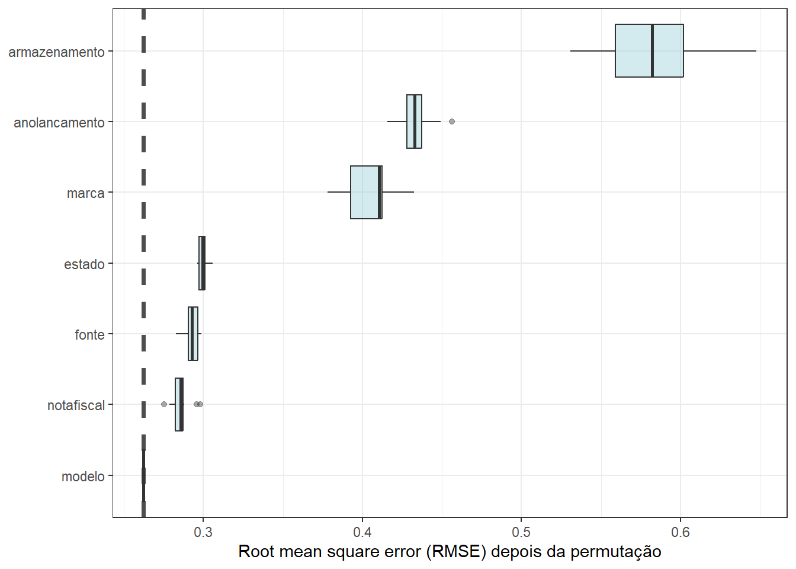
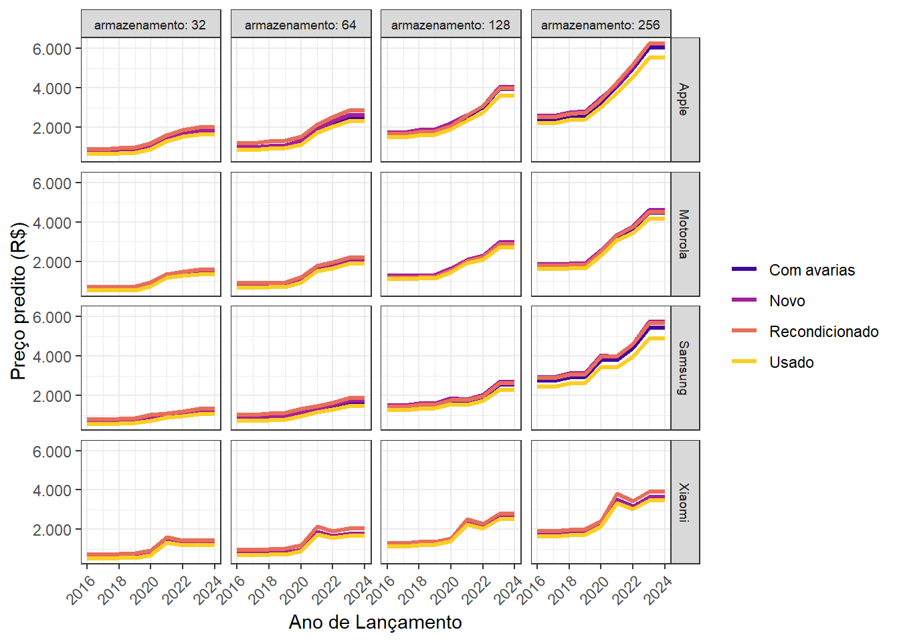

| x1 | x2 | y |
|---|---|---|
| -0.08 | 1.24 | 2.34 |
| 0.84 | 2.29 | 2.76 |
| -0.46 | 2.42 | 2.34 |
| -0.55 | 0.71 | 1.68 |
| 0.74 | 2.07 | 3.01 |
| -0.11 | 1.19 | 1.84 |
| -0.17 | 3.51 | 2.61 |
| -1.09 | 1.73 | 2.38 |
| -3.01 | 3.56 | 2.10 |
| -0.59 | 1.76 | 1.75 |
8 Regressão por máquinas de reforço de gradiente
8.1 Máquinas de reforço de gradiente
As máquinas de reforço de gradiente (gradient boosting machines - GBM) foram propostas por Jerome Friedman e consistem em um método de aprendizado por reforço que visa aproximar o gradiente da função perda, ou de forma mais simples, visa aproximar o erro de previsão e diminuir este a cada iteração do método. O conceito de aprendizado por reforço está relacionado ao fato de o método, de certa forma, aprender através do erro, uma vez que vai melhorando a previsão a cada tentativa ou iteração, a partir dos valores residuais atualizados. O gradiente ou erro é gradativamente reduzido de forma iterativa considerando uma taxa de aprendizagem. O método foi proposto inicialmente considerando árvores de decisão/regressão, mas pode ser implementado utilizado regressão por mínimos quadrados.
Um algoritmo GBM simplista do método GBM para regressão é apresentado à seguir:
- Defina \(\hat{f}(\mathbf{x})=0\) e \(\varepsilon_i = y_i\) para todos dados de treino.
- Para \(m=1,...,M\), faça:
- Estime uma árvore, \(\hat{f}_m\), para os resíduos dos dados de treino \((\mathbf{x}_i,\varepsilon_i)\), \(i=1,...,n\);
- Atualize \(\hat{f}(\mathbf{x})\) adicionando a árvore de regressão obtida multiplicada por uma taxa de aprendizagem \(\lambda\), isto é, \(\hat{f}(\mathbf{x}) \leftarrow \hat{f}(\mathbf{x}) + \lambda\hat{f}_m(\mathbf{x})\);
- Atualize os resíduos, isto é \(\varepsilon_i \leftarrow \varepsilon_i - \lambda\hat{f}_m(\mathbf{x}_i)\), \(i=1,...,n\);
- Entregue o modelo final “impulsionado” ou “reforçado”: \(\hat{f}(\mathbf{x}) = \sum_{m=1}^M\lambda\hat{f}_m(\mathbf{x})\)
A taxa de aprendizado, \(\lambda\), geralmente é um valor real muito pequeno, por exemplo 0,01 ou 0,001 e define a taxa que o modelo por reforço aprende, isto é, melhora sua previsão. Quanto menor \(\lambda\), maior o número de árvores, \(M\), necessário para uma boa aproximação. Tais parâmetros devem ser definidos por validação cruzada e grid search.
Dica
O GBM, \(\hat{f}_m(\mathbf{x})\) foi inicialmente implementado a partir de modelos de árvore com apenas uma partição e, portanto, dois nós terminais ou regiões, sendo, portanto, um aprendiz fraco (weak learner). Modelos com árvores com duas partições ou mais implicam em modelos com interação. Sugere-se definir o número ideal de partições finais via validação cruzada.
A função perda quadrática, comumente usada em problemas de regressão, é usada no algoritmo de aprendizado por reforço, conforme Equação 8.1.
\[L = \frac{1}{2}(y - \hat{f}(\mathbf{x}))^2 \tag{8.1}\]
A divisão por 2 visa facilitar os cálculos no algoritmo de aprendizado por reforço. Tomando o negativo da derivada de \(L\) em relação a \(f\) obtém-se o valor residual ou erro em relação à resposta de interesse, conforme Equação 8.2.
\[\begin{aligned} -\frac{\partial L}{\partial f} = y - \hat{f}(\mathbf{x}) = \varepsilon \end{aligned} \tag{8.2}\]
Portanto, em cada iteração, o algoritmo, ao aproximar uma árvore considerando \(n\) observações das variáveis regressoras, \(\mathbf{x}_i\), em relação à \(n\) valores residuais, \(\varepsilon_i\), aproxima o gradiente da função perda.
8.1.1 GBM para regressão passo a passo
Para entender melhor o algoritmo GBM, considere o conjunto arbitrário de dados de treino da Tabela 8.1, com duas variáveis independentes, \(x_1\) e \(x_2\), e uma dependente contínua, \(y\).
Considere, para fins didáticos, uma taxa de aprendizagem alta, \(\lambda\) = 0,5, e um número pequeno de iterações, \(M = 4\) árvores. O algoritmo inicia fazendo \(\hat{f}(x_1,x_2)=0\) e \(\varepsilon_i = y_i\), conforme Tabela 8.2.
| x1 | x2 | y | f_hat | e |
|---|---|---|---|---|
| -0.08 | 1.24 | 2.34 | 0 | 2.34 |
| 0.84 | 2.29 | 2.76 | 0 | 2.76 |
| -0.46 | 2.42 | 2.34 | 0 | 2.34 |
| -0.55 | 0.71 | 1.68 | 0 | 1.68 |
| 0.74 | 2.07 | 3.01 | 0 | 3.01 |
| -0.11 | 1.19 | 1.84 | 0 | 1.84 |
| -0.17 | 3.51 | 2.61 | 0 | 2.61 |
| -1.09 | 1.73 | 2.38 | 0 | 2.38 |
| -3.01 | 3.56 | 2.10 | 0 | 2.10 |
| -0.59 | 1.76 | 1.75 | 0 | 1.75 |
Fazendo \(m=1\), estima-se a primeira árvore, \(\hat{f} = T\), para os resíduos em função das variáveis independentes, \((x_1,x_2,\varepsilon)_i\), \(i=1,...,n\), conforme segue. Na primeira iteração, uma vez que \(\hat f(\mathbf x)_i = 0\), tem-se \(\varepsilon_i= y_i\), \(\forall i\).
node), split, n, deviance, yval
* denotes terminal node
1) root 10 1.7560 2.281
2) x2 < 1.915 5 0.4505 1.998 *
3) x2 > 1.915 5 0.5049 2.564 *O modelo obtido é usado para atualizar os valores previstos, \(\hat{f}(x_1,x_2)\leftarrow \hat{f}(x_1,x_2) + \lambda\hat{f}_1(x_1,x_2)\) e os resíduos, \(\varepsilon_i \leftarrow \varepsilon_i - \lambda\hat{f}_1(x_1,x_2)\), conforme Tabela 8.3.
| x1 | x2 | y | f_hat | e |
|---|---|---|---|---|
| -0.08 | 1.24 | 2.34 | 0.999 | 1.341 |
| 0.84 | 2.29 | 2.76 | 1.282 | 1.478 |
| -0.46 | 2.42 | 2.34 | 1.282 | 1.058 |
| -0.55 | 0.71 | 1.68 | 0.999 | 0.681 |
| 0.74 | 2.07 | 3.01 | 1.282 | 1.728 |
| -0.11 | 1.19 | 1.84 | 0.999 | 0.841 |
| -0.17 | 3.51 | 2.61 | 1.282 | 1.328 |
| -1.09 | 1.73 | 2.38 | 0.999 | 1.381 |
| -3.01 | 3.56 | 2.10 | 1.282 | 0.818 |
| -0.59 | 1.76 | 1.75 | 0.999 | 0.751 |
Tomando \(m=2\), repete-se o processo, obtendo-se uma nova árvore para os resíduos e atualizando as previsões e os resíduos, conforme Tabela 8.4.
node), split, n, deviance, yval
* denotes terminal node
1) root 10 1.1560 1.1400
2) x1 < -0.315 5 0.3261 0.9378 *
3) x1 > -0.315 5 0.4187 1.3430 *| x1 | x2 | y | f_hat | e |
|---|---|---|---|---|
| -0.08 | 1.24 | 2.34 | 1.6706 | 0.6694 |
| 0.84 | 2.29 | 2.76 | 1.9536 | 0.8064 |
| -0.46 | 2.42 | 2.34 | 1.7509 | 0.5891 |
| -0.55 | 0.71 | 1.68 | 1.4679 | 0.2121 |
| 0.74 | 2.07 | 3.01 | 1.9536 | 1.0564 |
| -0.11 | 1.19 | 1.84 | 1.6706 | 0.1694 |
| -0.17 | 3.51 | 2.61 | 1.9536 | 0.6564 |
| -1.09 | 1.73 | 2.38 | 1.4679 | 0.9121 |
| -3.01 | 3.56 | 2.10 | 1.7509 | 0.3491 |
| -0.59 | 1.76 | 1.75 | 1.4679 | 0.2821 |
Para \(m=3\), tem-se os resultados resumidos na Tabela 8.5.
node), split, n, deviance, yval
* denotes terminal node
1) root 10 0.8475 0.5702
2) x2 < 1.915 5 0.4252 0.4490 *
3) x2 > 1.915 5 0.2753 0.6915 *| x1 | x2 | y | f_hat | e |
|---|---|---|---|---|
| -0.08 | 1.24 | 2.34 | 1.89511 | 0.44489 |
| 0.84 | 2.29 | 2.76 | 2.29934 | 0.46066 |
| -0.46 | 2.42 | 2.34 | 2.09664 | 0.24336 |
| -0.55 | 0.71 | 1.68 | 1.69241 | -0.01241 |
| 0.74 | 2.07 | 3.01 | 2.29934 | 0.71066 |
| -0.11 | 1.19 | 1.84 | 1.89511 | -0.05511 |
| -0.17 | 3.51 | 2.61 | 2.29934 | 0.31066 |
| -1.09 | 1.73 | 2.38 | 1.69241 | 0.68759 |
| -3.01 | 3.56 | 2.10 | 2.09664 | 0.00336 |
| -0.59 | 1.76 | 1.75 | 1.69241 | 0.05759 |
Finalmente, para \(m=4\), obtém-se o modelo “reforçado” final que consiste na soma ponderada pela taxa de aprendizagem de todos os modelos, isto é, \(\hat{f}(\mathbf{x}) = \sum_{m=1}^M\lambda\hat{f}_m(\mathbf{x})\), com resultados resumidos na Tabela 8.6.
node), split, n, deviance, yval
* denotes terminal node
1) root 10 0.7372 0.2851
2) x1 < -0.315 5 0.3436 0.1959 *
3) x1 > -0.315 5 0.3140 0.3744 *| x1 | x2 | y | f_hat | e |
|---|---|---|---|---|
| -0.08 | 1.24 | 2.34 | 2.082286 | 0.257714 |
| 0.84 | 2.29 | 2.76 | 2.486516 | 0.273484 |
| -0.46 | 2.42 | 2.34 | 2.194589 | 0.145411 |
| -0.55 | 0.71 | 1.68 | 1.790359 | -0.110359 |
| 0.74 | 2.07 | 3.01 | 2.486516 | 0.523484 |
| -0.11 | 1.19 | 1.84 | 2.082286 | -0.242286 |
| -0.17 | 3.51 | 2.61 | 2.486516 | 0.123484 |
| -1.09 | 1.73 | 2.38 | 1.790359 | 0.589641 |
| -3.01 | 3.56 | 2.10 | 2.194589 | -0.094589 |
| -0.59 | 1.76 | 1.75 | 1.790359 | -0.040359 |
Atualizando-se as previsões e resíduos em cada iteração, observa-se que os resultados foram gradativamente melhorados.
Importante
Os hiperparâmetros a serem otimizados em modelos de regressão por GBM são a taxa de aprendizagem, \(\lambda\), e o número de iterações, \(M\).
8.2 Light GBM
O light GBM apresenta melhorias em relação ao GBM original. No processo de particionamento binário recursivo, para gerar uma nova partição, não são examinados todos os preditores. Cada nova partição é realizada a partir de nós que anteriormente garantiram maior ganho. Ademais, são desconsideradas observações com baixo gradiente (erro). O light GBM também agrupa preditores com poucos valores não nulos, tais como variáveis obtidas após codificação binária de preditores categóricos. Por fim, para os preditores contínuos, o light GBM não considera a busca da melhor partição em todos os níveis, mas dentro de divisões de classes como as de um histograma. Tais mudanças contribuem para diminuir consideravelmente o custo computacional.
Seja a previsão do preço de revenda de celulares usados. A Figura 8.1 apresenta o gráfico de importância dos preditores para este caso considerando um modelo obtido via light GBM. A importância foi medida por permutação. Observa-se que o armazenamento, ano de lançamento e marca são os três preditores mais importantes.

A Figura 8.2 expõe gráficos de efeitos parciais de parte dos preditores para prever o preço de revenda. Pode-se observar o efeito do armazenamento, ano, marca e estado no preço predito.

Importante
Os hiperparâmetros a serem otimizados em modelos de regressão por light GBM são a taxa de aprendizagem, \(\lambda\), o número de iterações, \(M\), profundidade da árvore, número mínimo de observações por partição, min_n, e a redução de perda (loss_reduction) a qual representa a melhoria na função de perda obtida ao dividir um nó em folhas.
8.3 Implementações em R
A seguir serão expostas as implementações necessárias para obter os resultados do capítulo.
8.3.1 Light GBM
Carregando bibliotecas e dados. A biblioteca bonsai é útil para implementação do método light GBM.
library(sjdatar)
library(tidymodels)
library(bonsai)
data(celularesusados)
dados <- celularesusadosSeparando dados de treino e teste. A transformação logarítmica na resposta é realizada fora da receita, uma vez que, ao se realizar previsões, o workflow só inverte os pré-processamentos dos preditores. A opção strata = estado realiza uma amostragem estratificada segundo o estado de conservação dos celulares observados.
set.seed(1)
dados_split <- initial_split(dados, strata = estado)
# dados_split
dados_treino <- training(dados_split)
dados_teste <- testing(dados_split)
dados_treino <- dados_treino |> mutate(preco = log(preco))
dados_teste <- dados_teste |> mutate(preco = log(preco))Definindo a receita. Como o GBM é baseado em árvores, não é necessário a normalização dos preditores.
receita <- recipe(formula = preco ~ .,
data = dados_treino) |>
step_novel(all_nominal_predictors()) |>
step_unknown(all_nominal_predictors()) |>
step_other(all_nominal_predictors()) |>
step_dummy(all_nominal_predictors()) |>
step_nzv(all_predictors()) |>
step_zv(all_predictors())
# receita |>
# prep() |>
# bake(dados_treino)Definindo o modelo via boost_tree. O light GBM apresenta muitos hiperparâmetros, sendo os principais o número de iterações (trees) e a taxa de aprendizagem (learn_rate). O mtry consiste no número de preditores aleatoriamente selecionados entre os disponíveis em cada particionamento binário recursivo, como no método floresta aleatória, \(m<k\). O hiperparâmetro tree_depth consiste na profundidade da árvore, ou no número de partições, sendo um critério de parada para cada árvore.Já o min_n define o número mínimo de observações por partição. Outro critério de parada consiste na redução na função perda, loss_reduction, para prosseguir com as partições. Um grid de preenchimento de espaço viável poderia ser usado no grid search com grid_space_filling(), porém será realizada busca iterativa. As partições dos dados para validação cruzada foram definidas além do workflow.
lgbm_model <- boost_tree(
mtry = tune(), trees = tune(), tree_depth = tune(),
learn_rate = tune(), min_n = tune(), loss_reduction = tune()
) |>
set_engine("lightgbm") |>
set_mode("regression")
# lgbm_grid <- grid_space_filling(finalize(mtry(), dados_treino),
# trees(),
# tree_depth(),
# learn_rate(),
# min_n(),
# loss_reduction(),
# size = 50)
set.seed(234)
cell_folds <- vfold_cv(dados_treino,
v = 5)
set.seed(345)
lgbm_wf <- workflow() |>
add_recipe(receita) |>
add_model(lgbm_model) Em seguida, é realizado o treinamento do modelo com busca iterativa via arrefecimento simulado e validação cruzada. A abordagem via grid search poderia ser usada com código comentado.
lgbm_res <-
lgbm_wf |>
# tune_grid(
# resamples = cell_folds,
# grid = lgbm_grid
# )
tune_sim_anneal(
resamples = folds,
iter = 25,
initial = 10,
param_info = extract_parameter_set_dials(lgbm_wf) |>
finalize(dados_treino),
control = control_sim_anneal(verbose = FALSE,
verbose_iter = FALSE,
no_improve = 5,
cooling_coef = 0.5,
restart = 3)
)Métricas de desempenho versus iteração na otimização de hiperparâmetros.
autoplot(lgbm_res, type = "performance") +
labs(x="iteração",y="média") +
theme_bw()Níveis dos hiperparâmetros testados na otimização.
autoplot(lgbm_res, metric= "rmse", type = "parameters") +
labs(x="iteração",y="") +
theme_bw()Desempenho dos modelos na validação cruzada.
lgbm_res |>
collect_metrics() |>
filter(.metric== "rmse") |>
arrange(mean)
lgbm_res |>
collect_metrics() |>
filter(.metric== "rsq") |>
arrange(desc(mean))Obtenção dos níveis ótimos dos hiperparâmetros e finalização do modelo e workflow.
best_lgbm <- lgbm_res |>
select_best(metric = "rmse")
best_wf_lgbm <- finalize_workflow(lgbm_wf, best_lgbm)
fit_lgbm_final <- fit(best_wf_lgbm, data = dados_treino)Importância das variáveis por permutação.
library(forcats) # function fct_reorder
library(DALEX)
explainer_lgbm <- explain(
model = fit_lgbm_final,
data = dados_treino |> select(-preco),
y = dados_treino$preco,
label = "lGBM",
predict_function = function(model, newdata) predict(model, newdata)$.pred,
verbose = F
)
ggplot_imp <- function(...) {
obj <- list(...)
metric_name <- attr(obj[[1]], "loss_name")
metric_lab <- paste(metric_name,
"depois da permutação")
full_vip <- bind_rows(obj) %>%
filter(variable != "_baseline_")
perm_vals <- full_vip %>%
filter(variable == "_full_model_") %>%
group_by(label) %>%
summarise(dropout_loss = mean(dropout_loss))
p <- full_vip %>%
filter(variable != "_full_model_") %>%
mutate(variable = fct_reorder(variable, dropout_loss)) %>%
ggplot(aes(dropout_loss, variable))
if(length(obj) > 1) {
p <- p +
facet_wrap(vars(label)) +
geom_vline(data = perm_vals, aes(xintercept = dropout_loss, color = label),
linewidth = 1.4, lty = 2, alpha = 0.7) +
geom_boxplot(aes(color = label, fill = label), alpha = 0.2)
} else {
p <- p +
geom_vline(data = perm_vals, aes(xintercept = dropout_loss),
linewidth = 1.4, lty = 2, alpha = 0.7) +
geom_boxplot(fill = "#91CBD765", alpha = 0.4)
}
p +
theme(legend.position = "none") +
theme_bw() +
labs(x = metric_lab,
y = NULL, fill = NULL, color = NULL)
}
vip_lgbm <- model_parts(explainer_lgbm, loss_function = loss_root_mean_square)
ggplot_imp(vip_lgbm)# library(vip)
# vip(fit_lgbm_final) Previsão e métricas de desempenho para os dados de teste.
pred_lgbm <- bind_cols(
predict(fit_lgbm_final, dados_teste),
dados_teste
)
metricas <- pred_lgbm |>
metrics(truth = preco, estimate = .pred)
metricas# A tibble: 3 × 3
.metric .estimator .estimate
<chr> <chr> <dbl>
1 rmse standard 0.366
2 rsq standard 0.556
3 mae standard 0.283Referências
Friedman, J. H. (2001). Greedy function approximation: a gradient boosting machine. Annals of statistics, 1189-1232.
Gareth, J., Daniela, W., Trevor, H., & Robert, T. (2013). An introduction to statistical learning: with applications in R. Spinger.
Hastie, T., Tibshirani, R., Friedman, J. H., & Friedman, J. H. (2009). The elements of statistical learning: data mining, inference, and prediction (Vol. 2, pp. 1-758). New York: springer.
Ke, G., Meng, Q., Finley, T., Wang, T., Chen, W., Ma, W., … & Liu, T. Y. (2017). Lightgbm: A highly efficient gradient boosting decision tree. Advances in neural information processing systems, 30.
8.4 Exercícios
Seja o conjunto de dados
celularesnovos2025. Realize a modelagem para prever o preço segundo os preditores disponíveis usando o modelo light GBM. Faça validação cruzada com busca iterativa e obtenha os níveis ótimos dos hiperparâmetros.Finalize o modelo, realize previsões e obtenha as métricas de desempenho para os dados de teste.
Realize o estudo de importância dos preditores via permutação.
Seja o conjunto de dados
motos_usadas2. Realize a modelagem para prever o preço segundo os preditores disponíveis usando o modelo light GBM. Faça validação cruzada com busca iterativa e obtenha os níveis ótimos dos hiperparâmetros.Finalize o modelo, realize previsões e obtenha as métricas de desempenho para os dados de teste.
Realize o estudo de importância dos preditores via permutação.